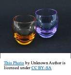
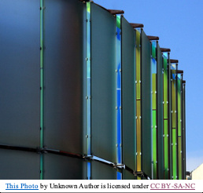
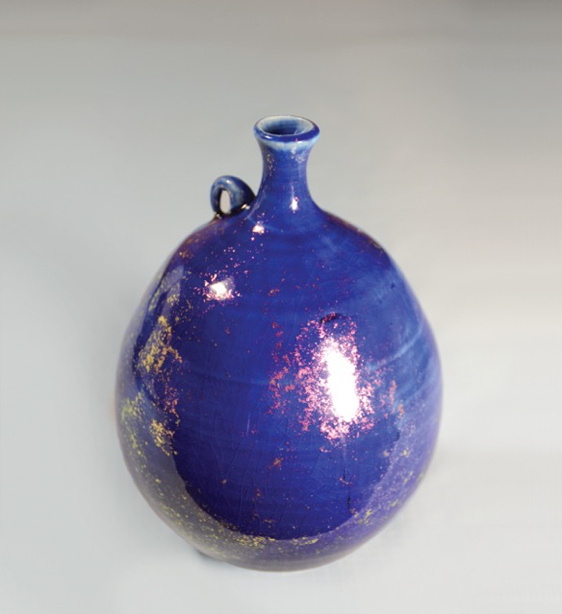
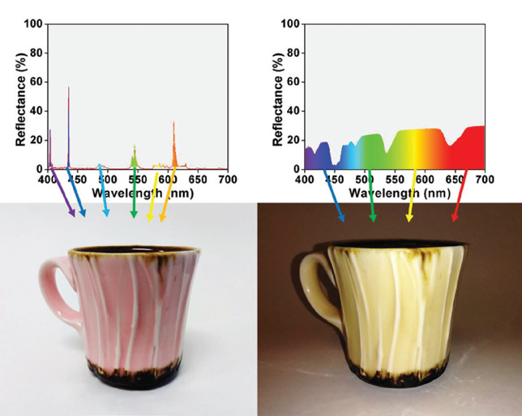
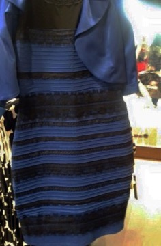

Dichroic Effect in Glass and Glaze
There are many ways in the ceramic field to create a variety of colors and spectacular effects on glazes. However, when the kiln is opened, and the glazes are revealed, the color you see is the color you get… or is it? The awesome truth is no, the dichroic effects found in ancient glass have been rediscovered and augmented. Science and chemistry have explained the ancient mystery of how something can be seen as two different colors and dichromatic effects are now being utilized in the ceramic field.
Dichroic comes from the word dichroism which, according to Merriam-Webster 2019 edition dictionary, is a property some crystals and solutions demonstrate when they don’t absorb, transmit, and reflect polarized light planes equally. In other words, as you observe an object with true dichroism the observed color changes according to what is illuminating it and/or according to what light is bouncing off it. When observing reflected light (or the light that is being bounced back to you), the dichroic effect will show a completely different color from what you observe when seeing the transmitted light (or the light filtering through the object). A good example of this effect is found in a cup from Late Roman era, 4th century AD (Brill, 2019). This glass cup shows a green color when seeing the reflected light and a red color when seeing transmitted light.

Another form of dichroism is glass that contains forms of rare earths and sometimes transition element oxides. These glasses only have the transmitted light qualities of dichroism. They Change color to the human eye depending on the type of light illuminating them. An example of this type can be found in Moser Glasses (Brill, 2019).

The more modern form of what we call dichroic is a bit removed from true dichroism, in that it is an interference filter adapted from a vacuum thin film deposition process discovered in 1887, and used by scientists at NASA in the 1950’s and 1960’s (Sandberg, 2019). It is a sort of scientific cheat in that they created a screen that blocks the passage of certain directional light waves. These glasses were layered with extremely thin films of metal oxides in order to shield the instruments on space craft from cosmic radiation and the eyes of astronauts from unfiltered sunlight (High Tech Art, 1993). Today there are many wider applications for dichroic films including fiber optics, laser guidance systems, art glass, and much more (Sandberg, 2019).
In the mid 70’s an artist and engineer named Murray Schwartz was dumpster diving for rejected aerospace mirrors behind a GM Vacuum Coating Laboratory in Newport Beach, when he was confronted by an employee named Jerry Sandberg. This chance encounter led the two men to a research partnership that culminated in the first three dichroic color specific coatings. These color specific mirrors were spectacular however creating them was costly.

Eventually Schwartz ‘s wife, a glass fusing artist named Rupama, used a piece of their coated mirror glass in one of her glass fusing’s and the spectacular results spurred further experimentation with using dichroic coatings for other art applications and contributed to a flourishing business, selling dichroic coated glass to artists (Sandberg, 2019). The techniques Schwartz and Sandburg developed for achieving a wide range of colors in their dichroic glass are described on the Coatings by Sandberg website.
A breakthrough came for ceramic artists when Coatings by Sandberg introduced a product that separates the dichroic flash from its substrate creating a fine film on copper that can be removed and crushed into glitter to be applied directly to glass, plastic, and porcelain.
In an article written by John Conrad for Ceramic Arts Daily, Conrad shares different techniques for applying dichroic film to ceramic pottery. This way of creating a dichroic effect on glaze uses dichroic glitter with a glue like medium of CMC Gum and water to stick the particles on to the surface of a finished piece of pottery. Once the CMC Gum is dry, a layer of clear glaze is carefully sprayed to cover the dichroic film and the piece is re-fired. The results from this create vessels with floating flecks of dichroic metal oxides sandwiched between layers of glaze. The results are more visible when applying the colorful metallic glitter to a glazed surface as they tend to be very subdued on white porcelain (Conrad, 2015).
The dichroic effect can also be achieved in creating glazes through an understanding of crystal field theory. A glaze formulation and technical manual for dichroic glazes, written by Jenn Wicks and Ryan Coppage, describes crystal field theory as a way of understanding electron valence systems that allows us to “change the color properties of a metal colorant or pigment based on the splitting of energy between orbitals”. In their book, The Mechanism of (and Recipes for) Dichroic Glazes (2019), Wicks and Coppage explain that,
The way in which we perceive the colors of transition metals has to do with how photons (light) are absorbed [… ] Essentially, the surrounding glaze environment encapsulates a metal, and oxygen atoms (or other components in the recipe) coordinate themselves around the metal – typically in an octahedral or tetrahedral geometry. Based on identity and arrangement of the surroundings, the electrons in the different d-orbitals can experience energy repulsions, which causes a split in energy between the existing orbitals. Such a change in energy, due to electrons not filling every orbital, allows for the absorption of light of specific frequencies (photons); the rest is reflected off of the surface, transmitted back to our eye, and is rebuilt into the color we see (p.147).
In their manual, Wicks and Coppage explore the dichroic responses rare earth oxides (neodymium oxide, erbium oxide, holmium oxide, and praseodymium oxide) have across different light sources. Their work shows that Neodymium oxide and Holmium oxide are the two rare earth oxides that have the most noticeable differences in color across different light sources when used in glaze formulations.
 https://www.mansfieldceramics.com/cap-articles/the-mechanism-of-and-recipes-for-dichroic-glazes/
From mysterious origins in ancient glassware where tiny amounts of colloidal gold and/or silver created a mystical color changing cup, to rare earth and transition element oxides, in the late 1800’s, creating radiation and light spectrum protection for astronauts, dichroic effects have captivated scientists and artists alike. Modern glaze chemistry and vacuum thin film deposition have enabled us to branch out of glass and into many other mediums with the spectacular and colorful effects of dichroism. When color variation, crystal formation, and the various textures of glazing aren’t enough, artists and potters alike can now enjoy the ambiguity of color like that of “the dress” only with much crisper and less ambiguous color shifts than washed out blue and black and with many more color options.

References
Dr. Brill, R. (2019). What is dichroic glass? - Ask a Glass Question. Corning Museum of Glass website:
High Tech Art: Chameleon Glass . (1993).
Howard Sandberg. (2019). Dichroic Glass .
John W. Conrad. (2015). In the Studio: Glitter Flashing. Ceramic Arts Network
Wicks, J. & Coppage, R. (2019) The Mechanism of (and recipes for) Dichroic Glazes. Mansfield Ceramics
What is the Difference Between Opal, Dichroic and Opalescent Glass? (2014). Ancient Glass Blog of The Allaire Collection